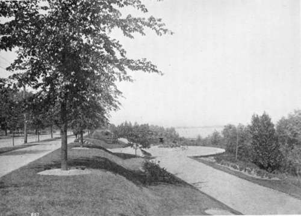

Our Country Villages. Part 3
Description
This section is from the book "Landscape Gardening", by Andrew Jackson Downing. Also available from Amazon: Landscape Gardening.
Our Country Villages. Part 3
In this way, we would secure to our village a permanent rural character; first, by the possession of a large central space always devoted to park or pleasure ground and always held as joint property and for the common use of the whole village; second, by the imperative arrangement of cottages or dwellings around it, in such a way as to secure in all parts of the village sufficient space, view, circulation of air, and broad, well-planted avenues of shade trees.
After such a village was built, and the central park planted a few years the inhabitants would not be contented with the mere meadow and trees, usually called a park in this country. By submitting to a small annual tax per family, they could turn the whole park, if small, or considerable portions, here and there, if large, into pleasure grounds. In the latter there would be collected, by the combined means of the village, all the rare, hardy shrubs, trees, and plants, usually found in the private grounds of any amateur in America. Beds and masses of ever-blooming roses, sweet-scented climbers, and the richest shrubs, would thus be open to the enjoyment of all during the whole growing season. Those who had neither the means, time, nor inclination, to devote to the culture of private pleasure grounds, could thus enjoy those which belonged to all. Others might prefer to devote their own garden to fruits and vegetables, since the pleasure grounds, which belonged to all, and which all would enjoy, would, by their greater breadth and magnitude, offer beauties and enjoyments which few private gardens can give.†
Fig. 43. Community Meeting Ground — A Riverside Park.
* Modern practice has not justified this specification for a 20-acre park at the village center. A small green, common or civic center of one to three acres is thought best, the larger parks being placed at the periphery of the town or at the termini of radiating trolley lines, where special scenery or other attractions justify. — F. A. W.
† At this point also American taste has failed to work out along the lines of Mr. Downing's own likes. The botanical garden or other collection of plants is nowadays favored by few landscape architects, if any, and is as seldom asked for by clients. Public parks in particular, are developed either as scenery or as playgrounds, not as museums. This may be only a matter of fashion and not a final expression of national character, but for the present it seems to represent the best taste of America. — F. A. W.
The next step, after the possession of such public pleasure grounds, would be the social and common enjoyment of them. Upon the well-mown glades of lawn, and beneath the shade of the forest trees, would be formed rustic seats. Little arbors would be placed near, where in midsummer evenings ices would be served to all who wished them. And, little by little, the musical taste of the village (with the help of those good musical folks, the German emigrants) would organize itself into a band, which would occasionally delight the ears of all frequenters of the park with popular airs.
Do we overrate the mental and moral influences of such a common ground of entertainment as this when we say that the inhabitants of such a village, enjoying in this way a common interest in flowers, trees, the fresh air, and sweet music daily, would have something more healthful than the ordinary life of cities, and more refining and elevating than the common gossip of country villages?
"Ah! I see, Mr. Editor, you are a bit of a communist." By no means. On the contrary, we believe, above all things under heaven, in the power and virtue of the individual home. We devote our life and humble efforts to raising its condition. But people must live in towns and villages, and therefore let us raise the condition of towns and villages, and especially of rural towns and villages, by all possible means!
But we are republican; and, shall we confess it, we are a little vexed that as a people generally, we do not see how much in America we lose by not using the advantages of republicanism. We mean now, for refined culture, physical comfort, and the like. Republican education we are now beginning pretty well to understand the value of, and it will not be long before it will be hard to find a native citizen who cannot read and write. And this comes by making every man see what a great moral and intellectual good comes from cheerfully bearing a part in the burden of popular education. Let us next take up popular refinement in the arts, manners, social life, and innocent enjoyments, and we shall see what a virtuous and educated republic can really become.
Besides this, it is the proper duty of the state — that is, the people — to do in this way what the reigning power does in a monarchy. If the kings and princes in Germany and the sovereign of England, have made magnificent parks and pleasure gardens and thrown them wide open for the enjoyment of all classes of the people (the latter, after all, having to pay for it), may it not be that our sovereign people will (far more cheaply, as they may) make and support these great and healthful sources of pleasure and refinement for themselves in America? We believe so; and we confidently wait for the time when public parks, public gardens, public galleries, and tasteful villages shall be among the peculiar features of our happy republic.
Continue to:
- prev: Our Country Villages. Part 2
- Table of Contents
- next: Chapter XXXII. On The Improvement Of Country Villages